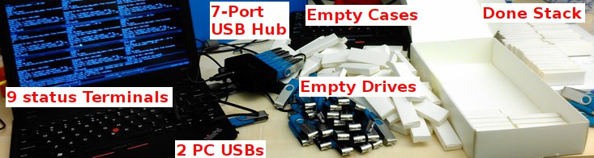

How to write 300 USB flash drives in less than 1 hour

The problem
Say you are organizing a conference and you have to write the conference proceedings to 300 USB flash drives. Given that these flash drives are usually cheap (and slow) it might take up to a minute to write 50MB of data to them. These also usually come in tiny boxes so unpacking them and packing them requires additional time and effort.
Doing the whole process by hands should take about 2 min for each USB drive.
-
Unpacking the drive from its casing
-
Setting the USB file-system label
-
Writing the data to the drive
-
Verifying the contents
-
Re-packing it
This task for 300 drives will take 2min * 300 = 600min = 10 hours !!!
The Solution
-
we could automate the process so that it all happens automatically as soon as we insert the USB drive,
-
we could automatically check if the data has been written correclty, and
-
we could write 9 drives in parallel
-
udev rules
-
some bash scripting
-
and a USB hub
you can do the whole thing by yourself in less than 1 hour (about 1min per 9 drives)
Here is how:
Set udev to run a script whenever a flash drive is plugged in:
- Step 1
-
Get the vendor and product ids of the flash drives:
$ lsusb ... Bus 001 Device 007: ID 058f:6387 Some Flash Drive Corp. ...
- Step 2
-
Set the udev rule to run /root/usb_script.sh when the drive is inserted /etc/udev/rules.d/50-usb.rules:
ACTION=="add", ATTRS{idVendor}=="058f", ATTRS{idProduct}=="6387", KERNEL=="sd?1", RUN+="/root/usb_script.sh %k"
- Step 3
-
Write the /root/usb_script.sh:
#!/bin/bash PATH=${PATH}:/bin/:/sbin/: # The device name (sdb1, sdc1, ...) is given as a parameter from udev DEVNAME=${@} DEV=/dev/${DEVNAME} COPY_FILES_FROM_DIR=/root/CONF-NAME/ # Write debug output for each drive into /tmp/usb_script_dbg.sd{b,c,d,...}1 DBG=/tmp/usb_script_dbg.${DEVNAME} echo "" > ${DBG} # Bell notification: 1 beep = INIT, 2 beeps = DONE, 10 beeps = ERROR INIT=1 DONE=2 ERR=10 alert() { local cnt=0 local max=${1} echo "ALERT ${max}" >> ${DBG} while [ ${cnt} -lt ${max} ]; do /bin/echo -e '\a' > /dev/console usleep 200000 cnt=$((${cnt} + 1)) done } # Wrapper function that checks if tasks succeed or fail. # Debug print in ${DBG} # Upon failure: 1. Write ERROR to DBG # 2. Unmount the drive # 3. Ring the bell to notify us that something went wrong safe_run() { local time_begin=`date +%s` echo -n "${@}" >> ${DBG} eval ${@} if [ $? -ne 0 ]; then echo " ...ERROR !!!" >> ${DBG} umount ${DEV} alert ${ERR} exit 1 fi local time_end=`date +%s` local time_taken=$((${time_end} - ${time_begin})) echo " ...OK ${time_taken}s" >> ${DBG} } # This is the main body of the script main() { echo "Started on dev: ${DEV}" >> ${DBG} alert ${INIT} # The mount dir is of the form /mnt/mnt_sd{b,c,d,...}1 MNT=/mnt/mnt_${DEVNAME}/ if [ ! -d ${MNT} ]; then safe_run mkdir -p ${MNT} fi # 1. Format the drive with LABEL: CONF-NAME safe_run mkfs.vfat -n "CONF-NAME" ${DEV} # 2. Mount it safe_run /bin/mount ${DEV} ${MNT} # 3. Copy files from the source dir to the mounted dir safe_run /bin/cp -r ${COPY_FILES_FROM_DIR} ${MNT} # 4. Wait for the drive to sync safe_run /bin/sync # 5. Unmount it safe_run /bin/umount ${MNT} # 6. Re-mount it safe_run /bin/mount ${DEV} ${MNT} # 7. Check if total size is what we expect CORRECT_SIZE=`du -s ${COPY_FILES_FROM_DIR}` size=`du -s ${MNT} | egrep -o [0-9]*` if [ ${size} -ne ${CORRECT_SIZE} ]; then echo "Wrong size found: ${size} instead of ${CORRECT_SIZE}" >> ${DBG} alert ${ERR} safe_run umount ${MNT} exit 1 else echo "Size ${size} ...OK" >> ${DBG} fi # 8. Check the MD5 SUM, by comparing it to /tmp/md5deep.sd{b,c,..}1.md5 # This has been generated earlier md5_file=/tmp/md5deep.${DEVNAME}.md5 safe_run /bin/md5sum -c ${md5_file} safe_run umount ${MNT} alert ${DONE} echo "DONE!" >> ${DBG} } time_begin=`date +%s` main ${@} time_end=`date +%s` time_taken=$((${time_end} - ${time_begin})) echo "Took ${time_taken} secs" >> ${DBG}
- Step 4
-
Make it executable so that udev can run it:
# chmod +x /root/usb_script.shNotes:
-
We check the size of the data in the drive in step # 7.
-
We compare the md5 checksum against that of the files in the original directory (in COPY_FILES_FROM_DIR). You need as many of these checksum files as the number of drives you will write in parallel. Each one has a unique name /tmp/md5deep.sd{b,c,..}1.md5 To generate them:
$ find ${COPY_FILES_FROM_DIR} -type f -print0 | xargs -0 md5sum >> /tmp/md5deep.tmp.md5
Then to create each /tmp/md5deep.sd{b,c,d,…}1.md5 you have to fix the path to match that of the path where each device will be mounted to (e.g. /mnt/mnt_sdb1/)
The Pipeline
-
Open one terminal for each device (one next to the other like tiles) and run:
$ tail -f -s 1 /tmp/usb_script_dbg.sdb1 # also sdc1,sdd1,...
-
Plug in the first USB drive and wait until you hear a single beep
-
Repeat the previous step until you have plugged in all flash drives
-
While the drives are being prepared, listen for Error Beeps and do some packing/unpacking
-
When you hear the DONE beeps, wait for all the drives to get done by checking on all terminals for the "DONE!" message. Remove the drives from the usb ports and go back to Step 1.